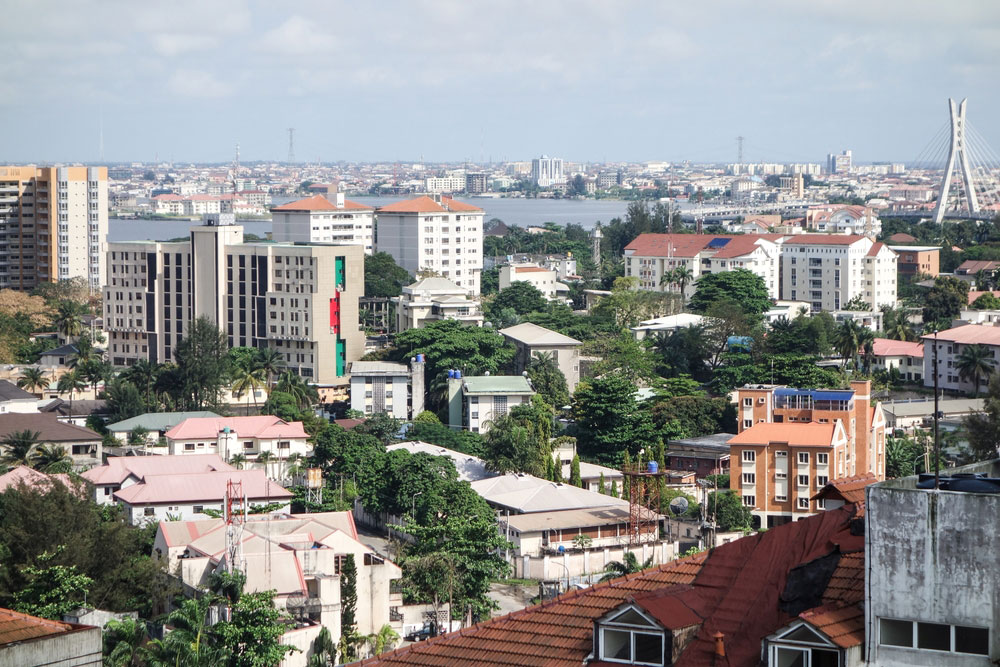

Image at left depicts Lagos, Nigeria.
This article, instead of focusing on a specific issue, focuses on most, if not all the misconceptions that are had by many westerners. Some examples of this are people thinking Africa is full of murder, disease, famine, poverty, crime, etcetera. This article disproves a lot of it with accounts from Africans and statistics. One example of this is a list of African countries and natural resources they possess. It turns out that a lot of diamonds, crude oil, cocoa, and coffee come from many places in Africa. Many people see it as a barren, uncivilized wasteland with nothing to bring to the table, when it is in fact the contrary. It also shows a study that contrasts Africa’s development in 1994 versus 2004. It shows that many more houses were built, a 10% increase in access to electricity, an addition of 9 million people who have gained access to clean water, and more. This also shows that Africa is a lot more than most people perceive it as. This shows us how dangerous single stories can be; if the continent is widely viewed as a scary, miserable, and empty place, no one sees the true potential of Africa.
“The Africa You Don’t Know” gathers all of the misconceptions people have about Africa and disproves them. “... All that the Western media seem to be keen on showing the West about Africa is backwardness, disease, hunger, want, deprivation, banditry, brigandage, slaughter fields, child soldiers, gang raped girls, harassed mothers, wasted children, flies feasting on the living and vultures waiting to devour the near-dead.” This quote is saying that all the West is being shown by the media are the dark and depressing aspects of the continent, which in turn makes people want to see more. Its addictive, almost; it is what is known as disaster pornography. “The Africa You Don’t Know” rounds up all the misconceptions about Africa and brings light to the much more positive aspects not many people are aware of.